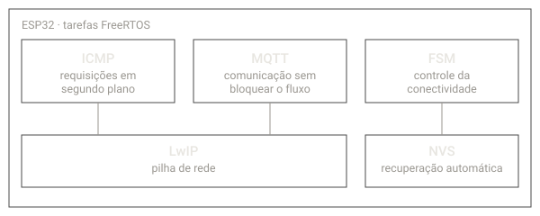

NS Monitor
Firmware para ESP32 que monitora o SLA de uma rede, com auditoria contínua de conectividade e análise de disponibilidade.
Usa FreeRTOS para dividir o trabalho em tarefas: a pilha de rede (LwIP), as requisições ICMP em segundo plano e a comunicação MQTT rodam sem bloquear o fluxo principal. Uma máquina de estados finita (FSM) controla a conectividade e permite recuperação automática com NVS.
Ver repositório do NS Monitor no GitHub (abre em nova aba)